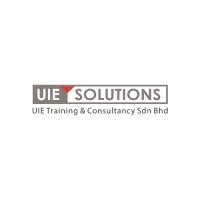
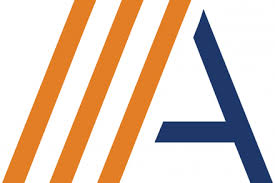
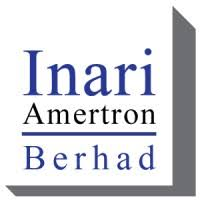
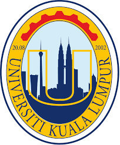
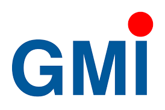
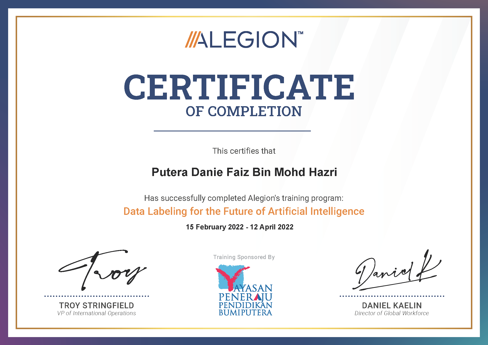

About Me
Bachelor of Mechatronics Engineering student with a strong foundation in PLC programming (Siemens Step 7, Omron) and automation systems. Experienced in designing, troubleshooting, and implementing control systems. Proficient in CAD, robotics, and sensors, with a proven ability to collaborate effectively on team projects. Eager to apply my knowledge and proactive approach to real-world challenges in a dynamic organization. Passionate about continuous learning and innovation in the field of automation.
Experience
UIE SOLUTIONS (M) SDN.BHD.

Position: Inspection Executive (Contract)
Duration: September 2022
Responsibilities: Developed a machine learning model for corrosion detection, labeled data based on ISO 4628 standards.
ALEGION

Position: Data Labeler (Part Time)
Duration: April 2022 - July 2022
Responsibilities: Labeled datasets to train machine learning models, ensured data quality and consistency.
Inari Amertron Berhad

Position: FBAR Technician (Internship)
Duration: July 2020 - December 2020
Responsibilities: Operated and maintained FBAR equipment, optimized production processes.
Education
Universiti Kuala Lumpur (MFI)

Bachelor of Mechatronics Engineering Technology with Honors
Duration: September 2021 - February 2025
German-Malaysian Institute

Diploma in Mechatronics Engineering Technology
Duration: April 2018 – July 2021
Projects
Development of Web-Based Monitoring System for Tablet Feeding System
Duration: March 2024 - June 2024
Automatic Production Monitoring and Traceability System
Duration: January 2021 - July 2021
Comparative Analysis of YOLO Models for Traffic Light Colour Detection
Design and Implementation of Robot Collating System Control Panel
Development of Mini Conveyor System with Mobile Device Control and Monitoring
Teras Jernang Wastewater Treatment Plant Automation Simulation
Skills
Soft Skills
- Team Collaboration
- Problem-Solving
- Project Management
- Communication
Certifications

Awards & Activities
- UniKL International RoBattle Competition - Organizer (Line Following Game Manager) (2023)
- Mechanizing The Mind National Stage (Sumo Robot) - First Place (2023)
- UniKL International Robattle Competition (Line Following) - Best Technology (2019)
- Robocon Malaysia (2019)
- UniKL Robattle Competition (Robot Combat) (2018)